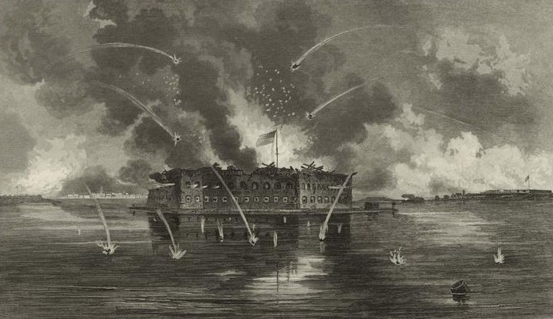

Шел 1861 год.
Александр II раскрепощает крестьян, Давид Ливингстон вовсю исследует Африку, в Петербурге помирает Тарас Шевченко, в Европе образуется Итальянское королевство.
А около города Чарльстон, что в штате Южная Каролина, собравшиеся джентльмены со всей возможной деликатностью начинают сражение за Форт-Самтер — первое боестолкновение Гражданской войны в США.

Вообще говоря, Север и Юг на тот момент уже давно уживались примерно как кошка с собакой или супруги после десяти лет категорически неудачного брака — уж слишком разные у штатов были цели, приоритеты и подходы к экономике. Если Север всегда был густонаселенным и промышленным, то Юг, наоборот, обладал безграничными запасами территорий (особенно после успешного отъема Техаса у растерявшейся Мексики), а вот народу было небогато. С промышленностью же был полный швах — ничего сложнее кузницы там отродясь не водилось.
Согласно распространенному мифу, война началась из-за стремления няшных и пушистых северян, а особенно Авраама Линкольна, ангела во плоти, освободить всеми угнетаемых бедных негров. Как обычно бывает с такими легендами, все было несколько иначе. В наших выпусках уже не раз и не два писалось, что высокодуховность и человеколюбие — вещи важные, но пощупать их нельзя, на хлеб намазать не получится, и в кармане они совсем не звенят. Как и всегда, причины войны были донельзя материальны. Хотя негры в их числе тоже засветились и не на последнем месте.
Северу (они же янки) рабы (хоть черные, хоть белые) были без особой надобности — жрать просят, сами ничего толком не умеют, к станкам их подпускать нельзя, а жить и так приходится в тесноте, так что ну их нафиг обратно в Африку. Югу же (дикси или джонни) негры напротив, крайне нравились. В 1810-х годах прогресс добрался до южных штатов в виде первых хлопкоочистительных машин, которые позволяли быстро и эффективно перерабатывать тонны собранного хлопка в полезное и — что важно! — вкусно оплачивавшееся Европой сырье. А для сбора первичного продукта на густо засеянных южных полях негры и прочие были нужны, причем в большом количестве.
Несмотря на то, что в то время штаты были каждый себе на уме и часто местные законы превалировали над федеральными, вопросы импорта и экспорта все-таки решались на высшем уровне, а не собранием деревенских старост, и югу в этих аспектах регулярно не везло.
То запретят ввозить рабов из Африки — ценнейшего источника черного сырья, из-за чего дикси приходится либо разводить своих в количестве, достаточном для покрытия всех нужд, либо втихаря протаскивать будущих афроамериканцев контрабандой. То введут конские пошлины на ввозимые промышленные товары, от которых сильно зависел Юг, а Север, наоборот, выпускал их сам и таким образом защищал отчественного производителя. Сплошное расстройство, в общем.
До поры до времени баланс рабовладельческих штатов с промышленными кое-как сохранялся — стороны даже договорились, что новые территории, включаемые в США (к огромному неудовольствию индейцев, наивно полагавших эти земли своими) будут сразу делиться поровну, чтобы ни у кого не было серьезного преимущества. Но после президентских выборов 1860 года свежеизбранный мистер Линкольн сообщил, что с рабством пора завязывать, и теперь во всех новых штатах этот пережиток прошлого будет запрещен. Ну а южане пусть продолжают рабовладеть — хрен бы с ними.
Учитывая, что на тот момент свободного места под нарезку новых штатов на континенте были еще вагоны, дикси, сверившись с географическими картами, серьезно напряглись и решили действовать, пока их окончательно под шконку не загнали.
Первой на ринг традиционно выпрыгнула Южная Каролина. Ей было не впервой — еще в двадцатых годах, после очередного повышения таможенных тарифов, власти штата отказались им подчиняться, мотивируя такую вольность тем, что «и так жрать нечего, побойтесь Бога, щаз вообще из вашего Союза выйдем к такой-то бабушке». Дело дошло до высылки в штат федеральных сил, на чем мятежники несколько подуспокоились ввиду отсутствия вменяемых средств против лома.
Но не в этот раз. Сообщив, что в Конституции не запрещено выходить из состава государства (правда, и не разрешено тоже, но кого это волнует?), Южная Каролина гордо покинула США, а вслед за ней отделились еще 5 штатов, а чуть позже — и недавно принятый Техас. Собравшись в городе Монтгомери, благородные джентльмены приняли свою, правильную Конституцию, и заодно своего президента — Джефферсона Дэвиса, знатного вояку (как, впрочем, и подавляющее большинство аристократичных дикси).
Северяне, воспользовавшись ситуацией, шустро понапринимали разнообразных законов, которые до того обязательно были бы заблокированы Югом, а потом уже начали думать, что делать дальше.
Первым камнем преткновения стали форты, находившиеся, с одной стороны, в федеральном подчинении, а с другой стороны — на территории нового государства, Конфедеративных Штатов Америки. Южная Каролина, как первый массовик-затейник, практически сразу заявила, что все, что у нее растет на огороде — оно её, кто бы это ни строил в свое время и кто бы там сейчас ни сидел, и с этим мнением согласились остальные южные штаты. Пока старый президент США, нерешительный и печальный Бьюкенен передавал дела новому, Линкольну, южане без пыли, шума и насилия отжали 4 форта, на что Бьюкенен выразил лишь унылый протест в стиле мистера Маки из South Park’а.
В отличие от других фортов, Самтер был вполне функционален, и его гарнизон не собирался просто так сдаваться, несмотря на все намеки Южной Каролины, вследствие чего был блокирован и взят в деликатную осаду.
Важно пояснить, что ни США, ни КША совершенно не хотелось выступать зачинщиками войны и делать первый выстрел — все понимали, что после этого пути назад не будет. Южане вежливо предлагали выкупить все форты, северяне не менее вежливо отказывали и аккуратно предупреждали, что чужое брать нехорошо, а портить — тем более. Даже решительный парень Линкольн, полностью придя к власти, где-то месяц думал, что же делать — запасы-то в Форт-Самтере не безграничные и вот-вот кончатся.
Наконец США под прикрытием боевых кораблей решили выслать форту гуманитарную помощь. КША, услышав такие новости, были вынуждены активизироваться — иначе этот балаган длился бы бесконечно. Да и прибытие флота соседнего государства как-то напрягало.
11 апреля форту был направлен ультиматум, на что его командующий ответил нечто в стиле «Пофигу, как помирать, от обстрела или от голода, так что жгите уже». 12 апреля, предварительно уведомив противника согласно всем правилам этикета, войска КША начали артиллерийский обстрел и приступили к методичному раздалбыванию вражеских укреплений, стараясь, впрочем, особенно никого не убить и не покалечить — ну некрасиво же будет.
Эскадра от США тем временем успела доплыть до места действий, но в бой не вступала, причем по неожиданной причине. Из-за путаницы в приказах ее флагман уплыл совсем не туда, куда надо, плюс на море разыгрался сильный шторм, поэтому моряки решили повременить и пока что порешать собственные проблемы.
Через 34 часа непрерывного обстрела (форт отвечал, но менее эффективно) у гарнизона Самтера осколком снаряда снесло флагшток с флагом. Пальба немедленно прекратилась и на пороге нарисовались парламентеры от КША, которые вежливо осведомились — это джентльмены капитулировать изволят или ошибочка какая вышла? Командующий фортом, решив, что бред пора заканчивать, согласился на сдачу.
Сражение получилось бы совсем не кровопролитным (всего 9 раненых с обеих сторон), если бы не салют, который северяне решили дать в честь своего флага перед тем как оставить укрепления. Во время прощальных залпов взорвался штабель со снарядами, убив на месте одного из артиллеристов. Именно он стал первой жертвой Гражданской войны в США.
14 апреля 1861 года Форт-Самтер был сдан войскам КША, а северяне были с почетом отправлены домой. Что на это ответит Линкольн, и как станут развиваться дальнейшие события?
Скоро прочтем.